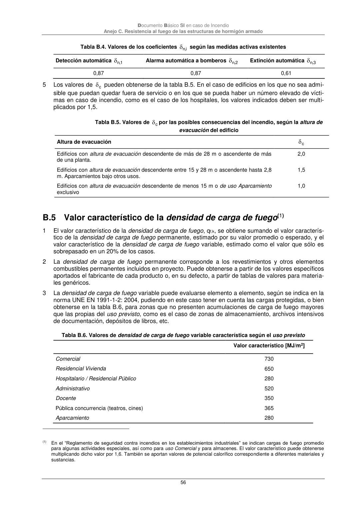

DB-SI · Fragmento de PDF p56 · versión 2025-03-04 · capa oficial
Formatos: JSON compacto · Markdown · PDF fuente
Ámbito del documento · texto del ámbito · documento y tablas
ID técnico a0149 · PDF pág. 56 · jerarquía no validada por persona · no es capítulo: sin_linea_de_encabezado · padre: raíz · literal original en el contenido: «Anejo C. Resistencia al fuego de las estructuras de hormigón armado»
Anejo C. Resistencia al fuego de las estructuras de hormigón armado 56 Tabla B.4. Valores de los coeficientes i,n según las medidas activas existentes Detección automática 1,n Alarma automática a bomberos 2 ,n Extinción automática 3 ,n 0,87 0,87 0,61 5 Los valores de c pueden obtenerse de la tabla B.5. En el caso de edificios en los que no sea admi- sible que puedan quedar fuera de servicio o en los que se pueda haber un número elevado de vícti- mas en caso de incendio, como es el caso de los hospitales, los valores indicados deben ser multi- plicados por 1,5. Tabla B.5. Valores de c por las posibles consecuencias del incendio, según la altura de evacuación del edificio Altura de evacuación c Edificios con altura de evacuación descendente de más de 28 m o ascendente de más de una planta. 2,0 Edificios con altura de evacuación descendente entre 15 y 28 m o ascendente hasta 2,8 m. Aparcamientos bajo otros usos. 1,5 Edificios con altura de evacuación descendente de menos 15 m o de uso Aparcamiento exclusivo 1,0

PDF fuente redistribuible: copia fiel enlazada en esta página (SHA256 verificado).